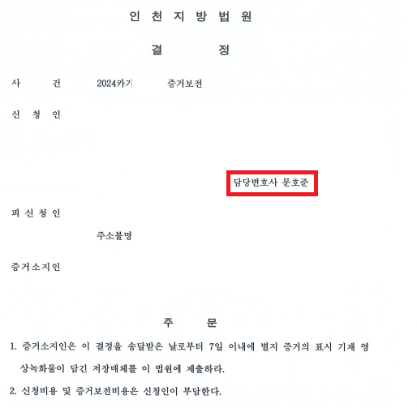
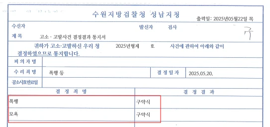

사건 개요
의뢰인 상대방으로 부터 폭행 당하였으나 해당 영상을 상대방이 운영하는 마트에서 보관 중, 증거보전 신청으로 증거 확보 후 고소 처벌
의뢰인 상대방이 운영하는 마트의 직원으로 일하여 왔는바, 상대방에게 폭행을 당한 사실이 존재합니다.
이에 의뢰인은 상대방을 고소하고자 하였으나 동영상 증거를 상대방 측이 보관하고 있어 이를 입수하기 어려워 변호인을 선임하였습니다.
상대방 측은 약 2주 정도만 CCTV 영상을 보관하고 있으므로 당시 수사 기관의 협조를 받기에는 시간적 여유가 없었으므로 변호인은 즉시 민사 증거 보전 신청을 하여 단 시간 내에 해당 증거를 입수 할 수 있었습니다.
결국 변호인은 해당 증거를 토대로 상대방을 고소하였고 결국 상대방은 혐의가 인정되어 법원으로부터 약식 명령을 발부 받게 되었습니다.


※ 구체적인 사건은 사실관계에 따라 달라질 수 있습니다.

 차현준 대표변호사
차현준 대표변호사
 문호준 대표변호사
문호준 대표변호사